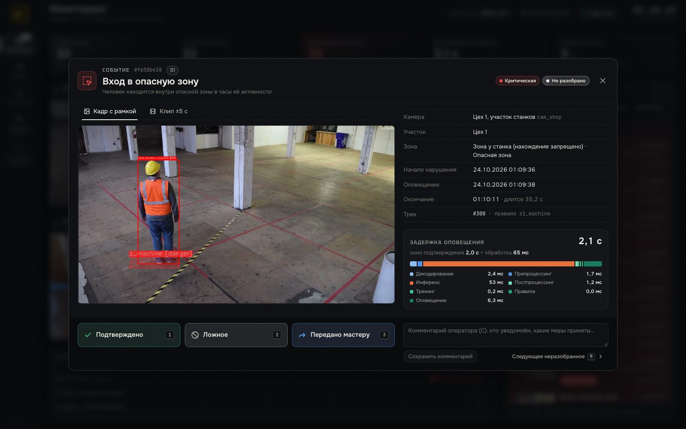
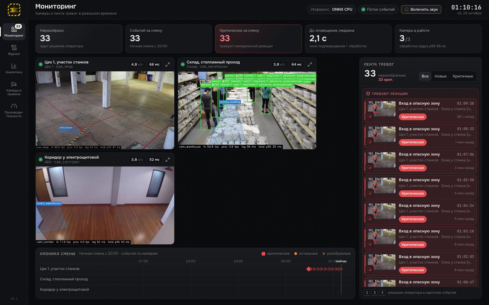
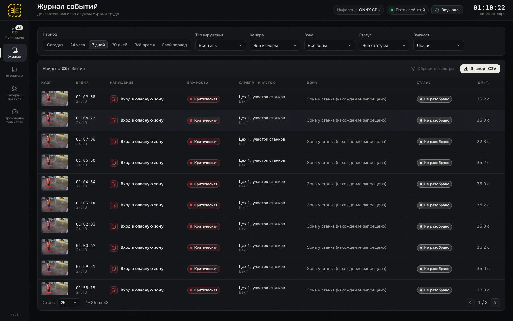
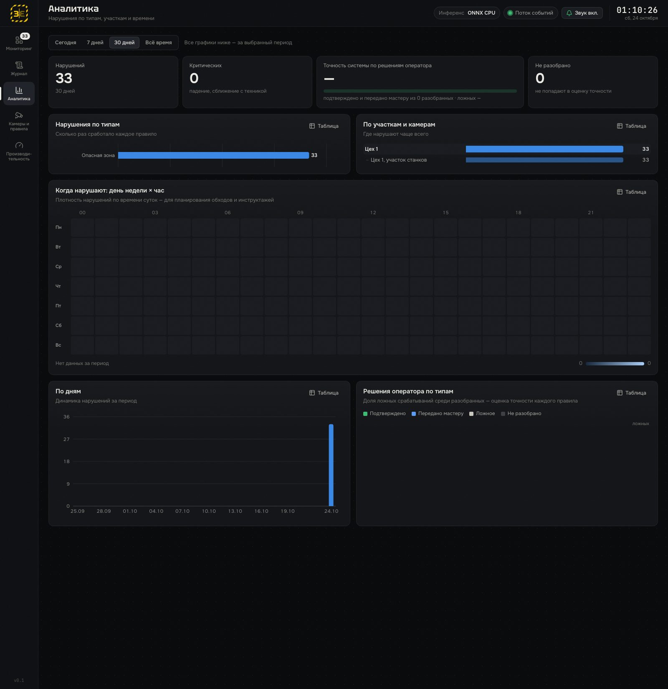
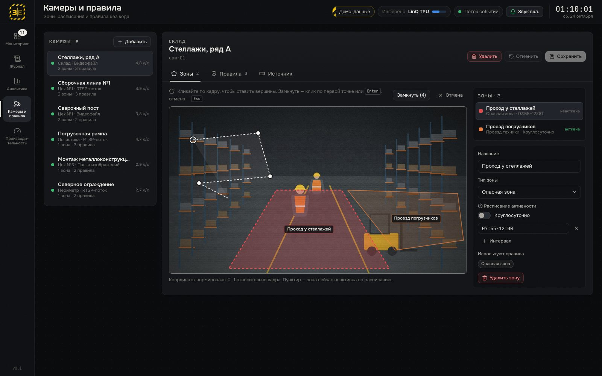

Решение оператора — одной клавишей: 1 подтверждено · 2 ложное · 3 передано мастеру

| Роль | Боль сейчас | Что даёт «Зазеркалье» | Экран |
|---|---|---|---|
| 1Специалист по ОТ | не может быть на всех участках, обходы периодические | рисует зону на кадре, ставит расписание, включает правило формой — без кода | Камеры и правила |
| 2Мастер смены | узнаёт о нарушении поздно или не узнаёт вовсе | одно оповещение с кадром, камерой и зоной; пока человек в кадре — без повторов | Карточка события |
| 3Оператор, диспетчер | внимание падает через 20–30 минут | лента вместо стены мониторов, критичные сверху; решение клавишей 1 / 2 / 3 | Мониторинг |
| 4Работники, водители | контроль выборочный, правила — «под проверку» | фиксация всегда и для всех одинаково; видео не покидает площадку | — косвенно |
| 5Служба ОТ, юристы | нет визуальных доказательств | журнал: кадр, клип, решение и комментарий оператора; фильтры, экспорт CSV | Журнал |
| 6Менеджмент | нет статистики: где, когда и что нарушают | по типам, участкам, сменам; «день недели × час»; доля ложных по правилам | Аналитика |
| 7ИТ-служба, интеграторы | непонятно, сколько потоков выдержит железо | FPS и задержка по этапам; расчёт камер на TPU; новый тип — новый плагин | Производительность |




@register_rule class CrowdingRule(RulePlugin): type = "crowding" title = "Скопление людей в зоне" required_models = frozenset({"det"}) params_schema = {...} # по ней UI строит форму def evaluate(self, ctx) -> list[Violation]: # только кадр; окно и дубли — в EventManager limit = int(self.cfg.params.get("max_people", 3)) out = [] for zone in self.camera.zones: if not is_zone_active(zone, ctx.ts): continue n = sum(in_zone(t, zone) for t in ctx.people) if n > limit: out.append(self.violation( ctx, zone_id=zone.zone_id)) return out
| Продукт | Что детектирует | Железо по открытым данным | Отеч. ускоритель | «Камер на узел» |
|---|---|---|---|---|
| Зазеркалье | 10 типов: зоны, СИЗ, падение, техника, бег, телефон, огонь, ограждения, высота, груз | edge-узел с LinQ TPU, det + pose int8 | да, замерено | по своим замерам |
| TRASSIRDSSL | каска, жилет, опасные зоны | серверы NeuroStation; GPU не указан | не заявлен | — |
| Macroscop | каска, жилет, респиратор, очки, перчатки | NVIDIA с CUDA, от 4 ГБ памяти | не заявлен | — |
| ITVAxxonSoft | человек без экипировки: каски, жилеты | CPU, NVIDIA GPU, Intel GPU, Huawei NPU | не заявлен | — |
| VizorLabs H&S | СИЗ, зоны, техника, падение, огонь, курение | не указано; 120 000 ₽ за видеопоток | не заявлен | — |
| SEESJSA Group | СИЗ, опасные зоны, местоположение | ARM edge, x86, серверы с видеокартами | не заявлен | — |
| Intenseye | 50+ типов рисков, остановка станка через ПЛК | edge-блок на NVIDIA Jetson Orin NX | зарубежный | — |
| Visionify | 12 видов СИЗ, огонь, телефон, погрузчики | edge-сервер NVIDIA RTX A4000 | зарубежный | «до 10 камер» |
| Д-1edge-узел: сервер + ускоритель LinQ (цены в открытом доступе нет) | 1.5 млн ₽ |
| Д-2внедрение пилота: монтаж, зоны и правила, обучение | 0.5 млн ₽ |
| Д-3сопровождение: 20 % от Д-1 в год | 0.3 млн ₽/год |
| Д-4срок службы узла | 3 года |
| Д-5пилот: 8 камер — 2 узла при det + pose или 1 узел только с det | 8 камер |
| Д-6полная цена одного серьёзного инцидента для предприятия | 3 млн ₽ |
| Модель, вход | Режим | к/с: окно 1 / 4 / 8 | кадр p50 / p95, мс | инференс p50 |
|---|---|---|---|---|
| det 480 | не-raw | 11.8 / 18.5 / 22.7 | 81.6 / 100.6 | 20.2 |
| det 480 | raw | 22.8 / 38.0 / 45.7 | 40.5 / 64.0 | 8.1 |
| det 640 | не-raw | 6.3 / 11.1 / 12.6 | 155.1 / 170.6 | 35.2 |
| det 640 | raw | 14.6 / 23.3 / 26.7 | 66.1 / 89.7 | 14.1 |
| pose 480 | raw | 24.1 / 44.7 / 50.1 | 39.4 / 60.2 | 8.2 |
| pose 640 | raw | 14.2 / 24.6 / 27.9 | 66.4 / 97.8 | 15.4 |
| det 480, срез conv | raw | 17.3 / 31.2 / 34.5 | 55.0 / 90.1 | 8.1 |
| det + pose на каждый кадр, raw | окно 1 | батч 4 | батч 8 | батч 8 p50 / p95, мс |
|---|---|---|---|---|
| det 480 + pose 480 | 9.0 | 14.6 | 21.1 | 385 / 432 |
| det 640 + pose 640 | 5.9 | 10.4 | 12.1 | 625 / 821 |
| Брокер и TPU | Ноутбук, VPN | Сервер стенда |
|---|---|---|
| RTT до брокера, p50 / p95 | 235.5 / 363.7 мс | 1.04 / 98.4 мс |
| Подключение AMQP | 2376 мс | 500 мс |
| Петля 0.1 МБ через брокер, p50 | 2116 мс | 1.76 мс |
| Петля 1 МБ, p50 | 7955 мс | 104 мс |
| Петля 5 МБ, p50 | 27 645 мс | 901 мс |
| Скорость туда и обратно | 0.11–0.37 МБ/с | 11–278 МБ/с |
| resnet50 (пример организаторов), total p50 | 712 мс | 100.7 мс |
| YOLOv8n det 480 raw, total p50 | 3305 мс | 40.5 мс |
| YOLOv8n det 480 raw, к/с | 0.29–0.33 | 22.8–45.7 |
| Стенд → ноутбук, своя очередь | p50 / p95 | поток |
|---|---|---|
| 64 Б, запрос-ответ | 237 / 308 мс | — |
| 2 КБ — событие и метаданные | 467 / 470 мс | 42 сообщ./с |
| 60 КБ — снапшот JPEG | 703 / 1860 мс | 5.8 сообщ./с |
| # | Нарушение | Плагин | Модели | Статус |
|---|
| Риск | Что делаем |
|---|---|
| Очередь TPU общая с другими командами | окно 4–8, raw, det 480; цифры даём с датой и условиями |
| Контейнер стенда — 1.5 CPU, 4 ГиБ | OMP_NUM_THREADS=2, батч между камерами, 480 вместо 640 |
| Сервер Jupyter гасится по простою | keepalive раз в 5 мин, скрипты подъёма edge-процесса |
| Канал VPN: 0.1–0.4 МБ/с от стенда | по каналу только события; резерв — мок-режим и видео-демо |
| int8 занижает уверенность det на 0.04–0.05 | порог det на TPU 0.25–0.30 вместо 0.35, recall 0.95 |
| СИЗ — десятки пикселей, окклюзии | только явное «нет каски»; окно 2 с; доля ложных в аналитике |
| Демо-ролики зациклены | каждый проход — новое событие; дубли меряем на разметке |
| Ноутбук падал по OOM | сторож памяти, тяжёлое — строго по одному |